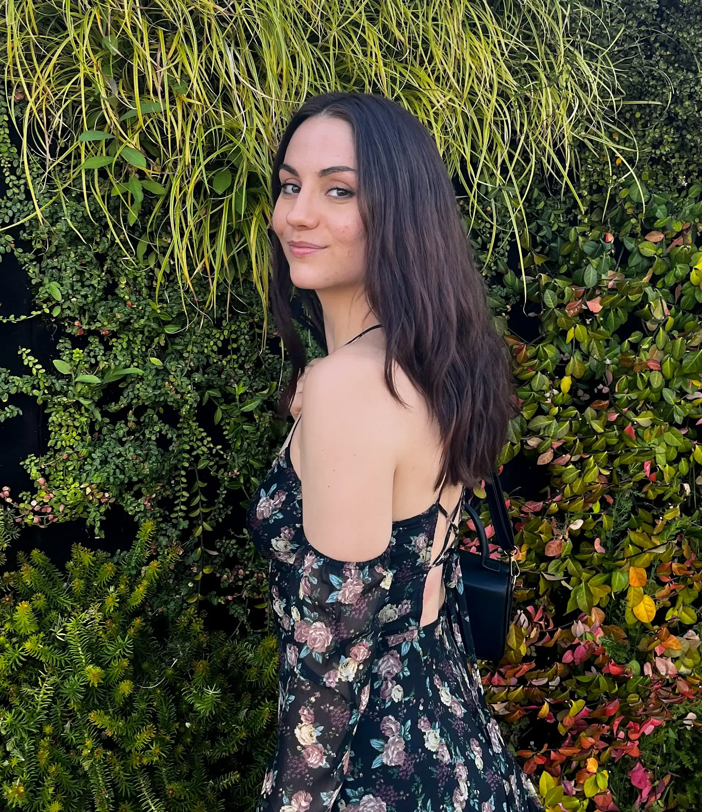
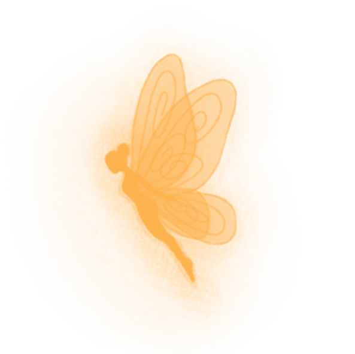

El diseño gráfico y la ilustración digital son para mí una forma de comunicar ideas, contar historias y generar conexiones emocionales. Me interesa especialmente el diseño editorial y todo aquello relacionado con el universo de los libros. Disfruto trabajando en proyectos que combinen creatividad, sensibilidad y estrategia, cuidando cada detalle para lograr transmitir el mensaje con una intención concreta. Mi curiosidad y ganas de aprender constantemente me permiten crecer tanto como diseñadora como persona.

